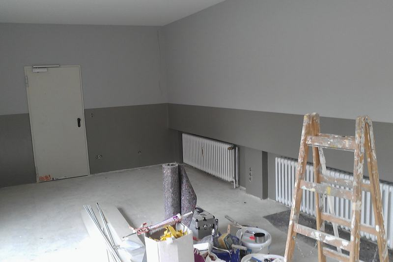
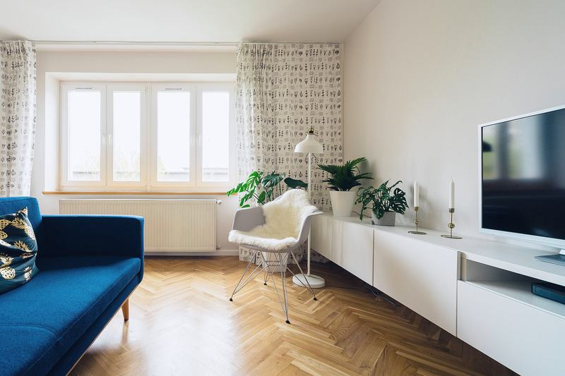

Port Arthur, Turku · 2025


Hei,
useimmat asiakkaamme ottavat yhteyttä juuri tässä vaiheessa. Avaimet on saatu tai remontti alkaa kuukauden päästä, ja huonekaluliike kysyy jo toimitusosoitetta.
Tulen paikalle, mittaan huoneen ja kysyn, missä istut iltaisin ja mihin lapset jättävät reppunsa. Kahden tunnin konsultaatio maksaa 290 €, ja kirjoitan muistiinpanot kahden arkipäivän kuluessa.
Kohteet
Kuvaan jokaisen huoneen ensimmäisellä käynnillä. Ne kuvat ovat yleensä arkisia: muuttolaatikoita, irrotettuja listoja ja maalipurkkeja.
Palvelut ja hinnat
Hinnat sisältävät arvonlisäveron 25,5 %. Kokonaissuunnittelun hinta sovitaan kiinteäksi ennen töiden alkua.
Kaksi tuntia kotonasi tai tilassasi. Saat kirjalliset muistiinpanot kahden arkipäivän kuluessa.
290 €2 h, matkat Turussa mukana
Yhden huoneen pohjaratkaisu, värit, materiaalit, valaisimet ja ostoslista. Valmis noin kolmessa viikossa.
alk. 950 €yksi huone
Koko asunnon tai huvilan suunnitelma remonttiin tai muuttoon. Hinta sovitaan kiinteäksi ennen aloitusta.
4 900–8 500 €tyypillisesti 100–150 m²
Lisätyö laskutetaan 95 €/h. Sisällöt ja rajaukset ovat palvelusivulla.
Materiaalit
Jokaiseen suunnitelmaan kuuluu materiaalitaulu oikeista näytepaloista. Valitse tästä kuudesta pinnasta 2–4 ja katso, miltä ne näyttävät yhdessä.
Oma palettiValitse kahdesta neljään pintaa.
Paletti on vielä tyhjä.
Tuon näytepalat mukanani konsultaatioon.

Studio
Perustimme Studio Utun Tuomas Raunion kanssa vuonna 2019. Ensimmäisen vuoden ovelle tuli silloin tällöin ihmisiä kysymään leikkausaikaa. Ohjasimme heidät kulman kahvilaan, ja yksi heistä tilasi myöhemmin olohuoneensa suunnitelman.
Olemme molemmat sisustusarkkitehteja SIO. Kumpikin vastaa omista kohteistaan ensimmäisestä käynnistä luovutukseen.
Tutustu studioonAjankohtaista
Otamme alkuvuodeksi 2027 vielä kaksi kokonaissuunnittelua. Kerro kohteesta lomakkeella.
Elina hoitaa tilaukset, toimitukset ja materiaalinäytteet kolmena päivänä viikossa.
78 neliön kolmio valmistui maaliskuussa. Lue kohteesta.
Konsultaatio
Liitä viestiin pohjapiirros, jos sellainen on. Vastaamme kahden arkipäivän kuluessa ja ehdotamme käyntiaikaa. Konsultaatio maksaa 290 €, ja matkat Turussa kuuluvat hintaan.
Varaa konsultaatio